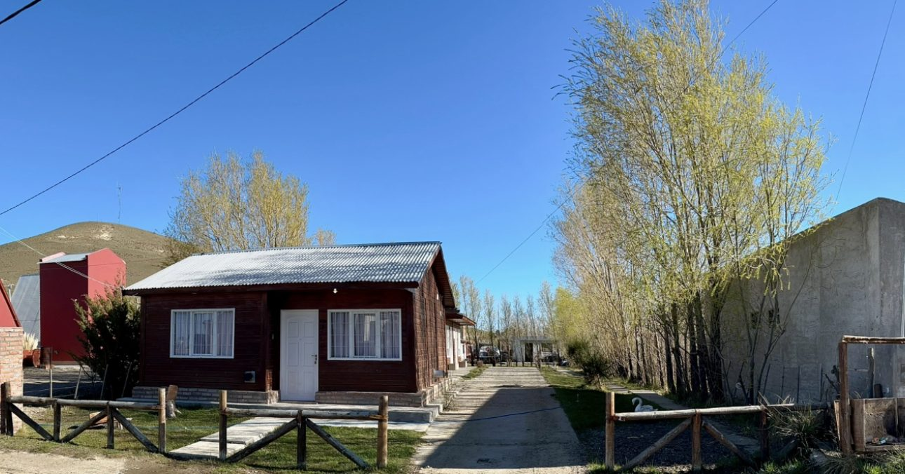
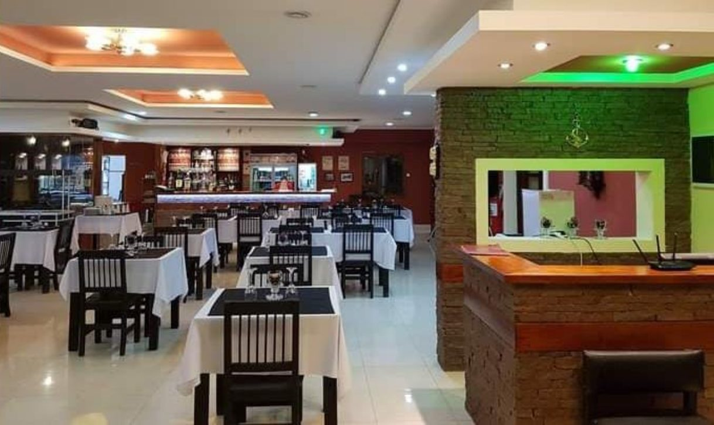
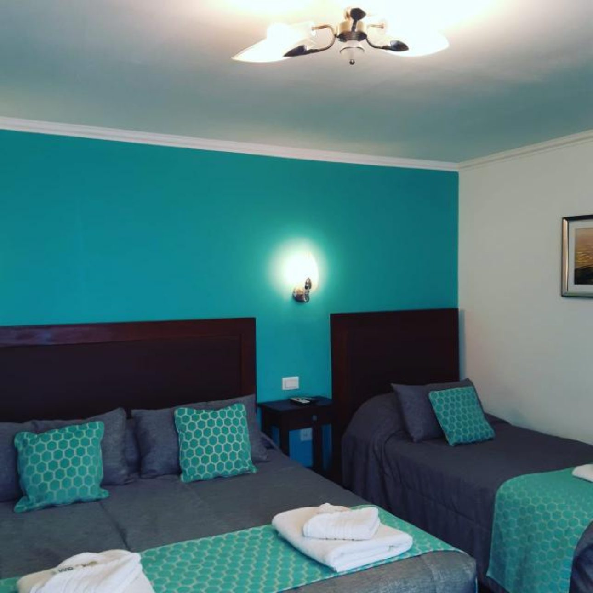
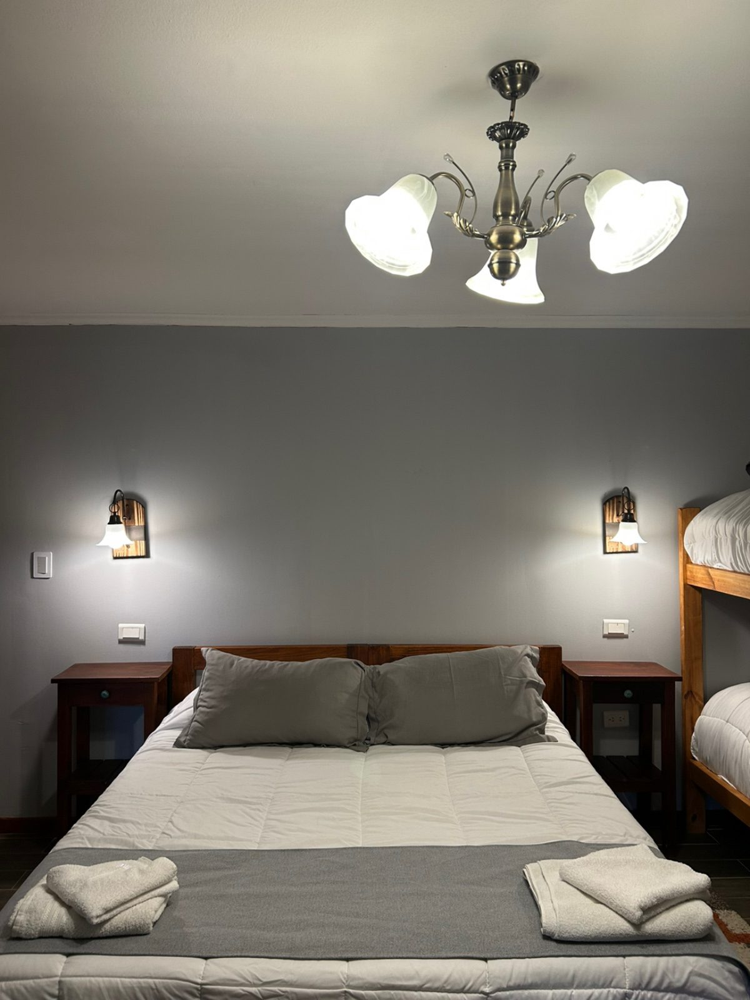
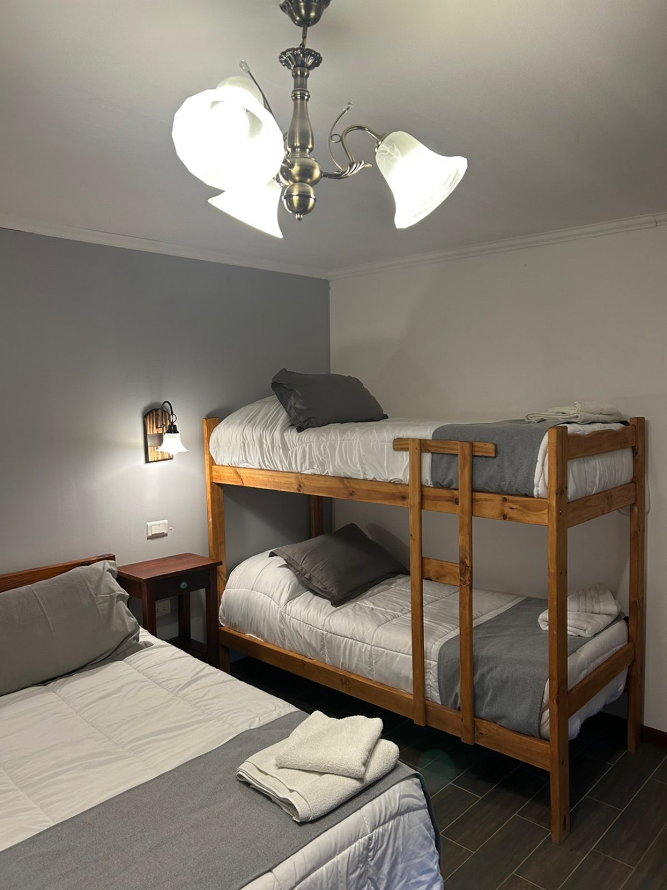

Hotel Che Cauquen
Hospedagem em Puerto Santa Cruz

Sobre o hotel
Hotel em Puerto Santa Cruz com quartos, restaurante próprio e cabanas. A recepção funciona 24 horas.
Cabanas
A Cabana nº 1 tem 2 quartos, sala de estar, cozinha, banheiro e fogueira no quintal.
Fotos





Localização
Av. Roca 1459, Puerto Santa Cruz, província de Santa Cruz.